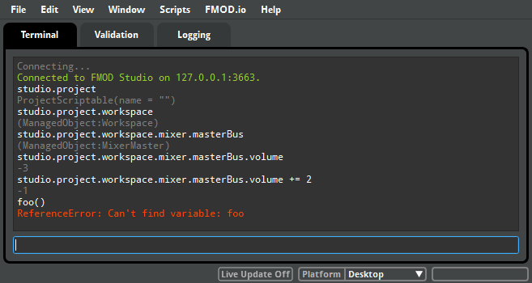

FMOD Studio User Manual 1.10
FMOD Studio's scripting feature lets you control Studio and edit projects by using JavaScript. Commands can be entered into Studio's built-in scripting interface, written into files that can be loaded either when FMOD Studio is launched or while it is running, or via TCP/IP connection.
Scripts can be used to perform a variety of tasks:
For more information about the scripting API, see the Scripting API Reference.
Script files are automatically evaluated every time you load a project. FMOD Studio reads scripts from any files with the .js extension in the following locations:
After adding or altering a script for FMOD Studio, you can select 'Reload' in the 'Scripts' menu to use the newly updated script.
Some example scripts are included with FMOD Studio, and can be found in the built-in scripts directory.
Studio also supports evaluating script code in a REPL style interface. This can be used to control Studio remotely from an external application (e.g. your level editor).
Communicating with Studio is done via a TCP/IP connection over port 3663. Any data transmitted to Studio will be interpreted as JavaScript encoded as UTF-8. Any data received by clients should be interpreted as UTF-8 strings, representing the evaluated code.
Commands can also be run using the built-in terminal interface. The console window can be opened by selecting 'Window > Console' in the menu bar or by using the shortcut key combination Control+0 on Windows or ⌘+0 on Mac. This will open the Console window, which contains the Terminal tab. You can type commands directly into this:

Using the managed object API, along with the studio.project.create(entityName) function, allows you to create objects within the project. For example, to create a new event in the root folder of the project:
myEvent = studio.project.create("Event"); myEvent.name = "My New Event"; myEvent.folder = studio.project.workspace.masterEventFolder;
And to delete the newly created event:
myEvent.nullify();
Studio provides the studio.version script object which allows you to check the tool version. It is good practice to check the tool version before installing script functionality. For example:
if(studio.version.majorVersion >= 7) { // add menu bar items }
When Studio loads script within your Javascript files, it executes within its own scope. This means that if you declare a function called foo(), you will still not be able to call foo() directly from the shell interface. To register functions that can be called globally, you must attach them to the global context. For example:
var global = this; global.foo = function() { alert("Hello!"); }
studio.menu.addMenuItem({ name: "Greetings\\Say Hello", execute: function() { alert("Hello"); }, keySequence: "Ctrl+H", }); studio.menu.addMenuItem({ name: "Greetings\\Say Bye", execute: function() { alert("Bye"); }, isEnabled: false, }); studio.menu.addMenuItem({ name: "Greetings\\----" }); // use all '-' characters to create a separator studio.menu.addMenuItem({ name: "Greetings\\Say Checked", execute: function() { alert("Checked toggled"); this.isChecked = !this.isChecked; }, isChecked: true, }); studio.menu.addMenuItem({ name: "Greetings\\Advanced\\Say what's Selected", execute: function() { alert(studio.window.browserCurrent()); }, isVisible: function() { return studio.window.browserCurrent(); } }); studio.menu.addMenuItem({ name: "Greetings\\Dynamic Submenu", subMenuItems: function() { var items = []; for(var i=0; i < 4; i++) { items.push({ name: "#" + i, execute: function() { alert("Well hello there " + this.name); }, }); } return items; }, });
studio.menu.addMenuItem({ name: "Save and Build", execute: function buildAndCopy() { studio.project.save(); studio.project.build(); alert("Save and Build complete!"); }});
var masterBus = studio.project.workspace.mixer.masterBus; masterBus.volume = -2;
var eventId = "{aabe5118-c144-4dc3-839a-ff52a2b49162}"; var timelinePos = 2.3; var event = studio.project.lookup(eventId); if(event) { studio.project.open(event); event.timeline.setCursorPosition(timelinePos); alert("Opened and scrubbed: " + event.name); } else { alert("Could not find event: " + eventId); }
studio.menu.addMenuItem({ name: "Add Group Track", isEnabled: function() { var event = studio.window.browserCurrent(); return event && event.isOfExactType("Event"); }, execute: function() { var trackName = studio.system.getText("Name of new group track:", "New Track"); if(trackName) { var event = studio.window.browserCurrent(); var track = studio.project.create("GroupTrack"); track.mixerGroup.output = event.mixer.masterBus; track.mixerGroup.name = trackName; event.relationships.groupTracks.add(track); } }, });
function postAudioFileImported( audioFile ) { // tries to put 'abc_sound.wav' into the 'ABC' folder if it exists var fileName = audioFile.audioFilePath.split('/').pop(); var prefix = fileName.substr(0, 3).toUpperCase(); console.log(fileName + " has the prefix " + prefix); if(audioFile.container.id != studio.project.workspace.audioBinManager.masterAudioBinFolder.id) { console.log("The file isn't in the root folder -- user dragged to a specific folder so we can skip this."); return; } var items = studio.project.workspace.audioBinManager.masterAudioBinFolder.items; for(var i=0; i < items.length; i++) { if(items[i].isOfType("AudioBinFolder") && items[i].name === prefix) { audioFile.container = items[i]; console.log("Moving" + fileName + " to " + items[i].name); return; } } } studio.project.audioFileImported.connect(postAudioFileImported);